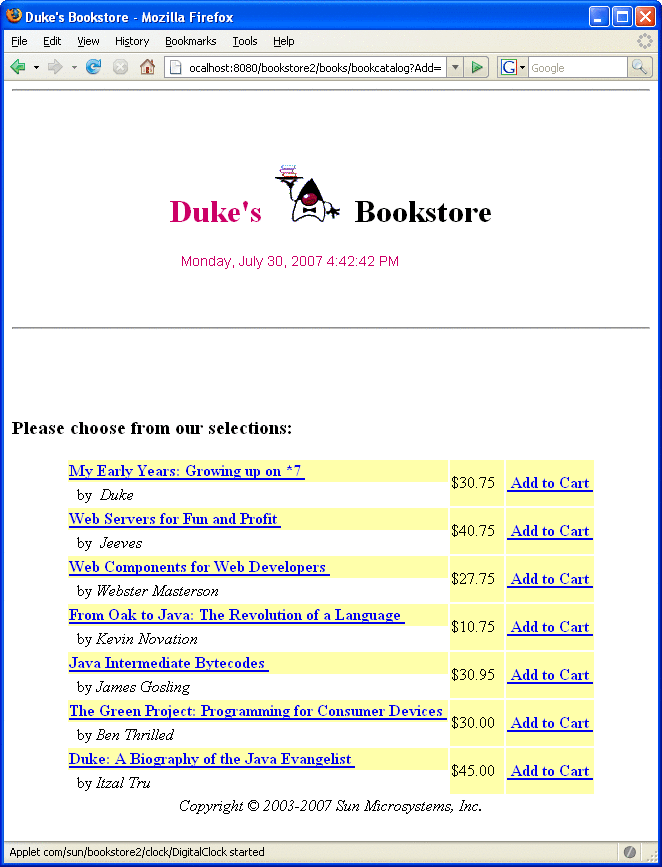

The Example JSP Pages
To illustrate JSP technology, this chapter rewrites each servlet in the Duke’s Bookstore application introduced in The Example Servlets as a JSP page (see Table 5-1).
Table 5-1 Duke’s Bookstore Example JSP Pages
Function |
JSP Pages |
|---|---|
Enter the bookstore. |
bookstore.jsp |
Create the bookstore banner. |
banner.jsp |
Browse the books offered for sale. |
bookcatalog.jsp |
Add a book to the shopping cart. |
bookcatalog.jsp and bookdetails.jsp |
Get detailed information on a specific book. |
bookdetails.jsp |
Display the shopping cart. |
bookshowcart.jsp |
Remove one or more books from the shopping cart. |
bookshowcart.jsp |
Buy the books in the shopping cart. |
bookcashier.jsp |
Receive an acknowledgment for the purchase. |
bookreceipt.jsp |
The data for the bookstore application is still maintained in a database and is accessed through tut-install/javaeetutorial5/examples/web/bookstore2/src/java/com/sun/bookstore2/database/BookDBAO.java. However, the JSP pages access BookDBAO through the JavaBeans component tut-install/javaeetutorial5/examples/web/bookstore2/src/java/com/sun/bookstore2/database/BookDB.java. This class allows the JSP pages to use JSP elements designed to work with JavaBeans components (see JavaBeans Component Design Conventions).
The implementation of the database bean follows. The bean has two instance variables: the current book and the data access object.
package database;
public class BookDB {
private String bookId = "0";
private BookDBAO database = null;
public BookDB () throws Exception {
}
public void setBookId(String bookId) {
this.bookId = bookId;
}
public void setDatabase(BookDAO database) {
this.database = database;
}
public Book getBook()
throws Exception {
return (Book)database.getBook(bookId);
}
...
}This version of the Duke’s Bookstore application is organized along the Model-View-Controller (MVC) architecture. The MVC architecture is a widely used architectural approach for interactive applications that distributes functionality among application objects so as to minimize the degree of coupling between the objects. To achieve this, it divides applications into three layers: model, view, and controller. Each layer handles specific tasks and has responsibilities to the other layers:
The model represents business data, along with business logic or operations that govern access and modification of this business data. The model notifies views when it changes and lets the view query the model about its state. It also lets the controller access application functionality encapsulated by the model. In the Duke’s Bookstore application, the shopping cart and database access object contain the business logic for the application.
The view renders the contents of a model. It gets data from the model and specifies how that data should be presented. It updates data presentation when the model changes. A view also forwards user input to a controller. The Duke’s Bookstore JSP pages format the data stored in the session-scoped shopping cart and the page-scoped database bean.
The controller defines application behavior. It dispatches user requests and selects views for presentation. It interprets user inputs and maps them into actions to be performed by the model. In a web application, user inputs are HTTP GET and POST requests. A controller selects the next view to display based on the user interactions and the outcome of the model operations. In the Duke’s Bookstore application, the Dispatcher servlet is the controller. It examines the request URL, creates and initializes a session-scoped JavaBeans component (the shopping cart), and dispatches requests to view JSP pages.
Note - When employed in a web application, the MVC architecture is often referred to as a Model-2 architecture. The bookstore example discussed in Chapter 4, Java Servlet Technology, which intermixes presentation and business logic, follows what is known as a Model-1 architecture. The Model-2 architecture is the recommended approach to designing web applications.
In addition, this version of the application uses several custom tags from the JavaServer Pages Standard Tag Library (JSTL), described in Chapter 7, JavaServer Pages Standard Tag Library:
c:if, c:choose, c:when, and c:otherwise for flow control
c:set for setting scoped variables
c:url for encoding URLs
fmt:message, fmt:formatNumber, and fmt:formatDate for providing locale-sensitive messages, numbers, and dates
Custom tags are the preferred mechanism for performing a wide variety of dynamic processing tasks, including accessing databases, using enterprise services such as email and directories, and implementing flow control. In earlier versions of JSP technology, such tasks were performed with JavaBeans components in conjunction with scripting elements (discussed in Chapter 9, Scripting in JSP Pages). Although still available in JSP 2.0 technology, scripting elements tend to make JSP pages more difficult to maintain because they mix presentation and logic, something that is discouraged in page design. Custom tags are introduced in Using Custom Tags and described in detail in Chapter 8, Custom Tags in JSP Pages.
Finally, this version of the example contains an applet to generate a dynamic digital clock in the banner. See Including an Applet for a description of the JSP element that generates HTML for downloading the applet.
To deploy and run the application using NetBeans IDE, follow these steps:
Perform all the operations described in Accessing Databases from Web Applications.
In NetBeans IDE, select File→Open Project.
In the Open Project dialog, navigate to:
tut-install/javaeetutorial5/examples/web/
Select the bookstore2 folder.
Select the Open as Main Project check box and the Open Required Projects check box.
Click Open Project.
In the Projects tab, right-click the bookstore2 project, and select Undeploy and Deploy.
To run the application, open the bookstore URL http://localhost:8080/bookstore2/books/bookstore.
To deploy and run the application using Ant, follow these steps:
In a terminal window, go to tut-install/javaeetutorial5/examples/web/bookstore2/.
Type ant. This command will spawn any necessary compilations, copy files to the tut-install/javaeetutorial5/examples/web/bookstore2/build/ directory, and create a WAR file and copy it to the tut-install/javaeetutorial5/examples/web/bookstore2/dist/ directory.
Start the Application Server.
Perform all the operations described in Creating a Data Source in the Application Server.
To deploy the example, type ant deploy. The deploy target outputs a URL for running the application. Ignore this URL, and instead use the one shown in the next step.
To run the application, open the bookstore URL http://localhost:8080/bookstore2/books/bookstore.
To learn how to configure the example, refer to the deployment descriptor (the web.xml file), which includes the following configurations:
A display-name element that specifies the name that tools use to identify the application.
A context-param element that specifies the JSTL resource bundle base name.
A listener element that identifies the ContextListener class used to create and remove the database access.
A servlet element that identifies the Dispatcher servlet instance.
A set of servlet-mapping elements that map Dispatcher to URL patterns for each of the JSP pages in the application.
Nested inside a jsp-config element are two jsp-property-group elements, which define the preludes and coda to be included in each page. See Setting Properties for Groups of JSP Pages for more information.
Figure 5-2 shows the bookcatalog.jsp page from the Duke’s Bookstore application. This page displays a list of all the books that are available for purchase.
Figure 5-2 Book Catalog
See Troubleshooting Duke's Bookstore Database Problems for help with diagnosing common problems related to the database server. If the messages in your pages appear as strings of the form ??? Key ???, the likely cause is that you have not provided the correct resource bundle base name as a context parameter.